Dolev Strong Broadcast Protocol
Paper: [1]
System Model
- \(n\) processors (parties) connected by a completely connected, totally reliable communication network.
- Communication proceeds in synchronous phases (rounds): all processors know the round structure and total number of rounds in advance.
- A designated sender holds an input value \(v \in V\).
- Up to \(t\) processors may be Byzantine (faulty): they can behave arbitrarily and collude.
- An authentication (digital signature) scheme (e.g., RSA) is available:
- Any processor can sign messages and verify signatures.
- No processor can forge another's signature or alter a signed message undetectably.
- Byzantine agreement (broadcast) is achieved when:
- (Agreement) All correct processors agree on the same value.
- (Validity) If the sender is correct, then all correct processors agree on the sender's value.
Main Results
Lower bound on rounds (Theorem 2)
Theorem
Byzantine agreement cannot be achieved for \(n\) processors with at most \(t\) faults within \(t\) or fewer phases, provided \(n > t + 1\).
In other words, any protocol tolerating \(t\) Byzantine faults, regardless of what kind of messages it uses (authenticated or not), needs at least \(t+1\) synchronous rounds.
Proof sketch (by example: \(n=4, t=2\))
We show 2 rounds are not enough. Suppose for contradiction some protocol achieves agreement in 2 rounds with 4 nodes \(\{1, 2, 3, 4\}\), tolerating \(t=2\) faults.
A configuration is the complete communication pattern: which messages each node sends in each round. Each node has arrows to every other node per round.
- Configuration \(C\): honest execution, sender has \(v=0\)
All nodes are honest. The sender (node 1) broadcasts \(v=0\). In each round, every node sends a message to every other node.
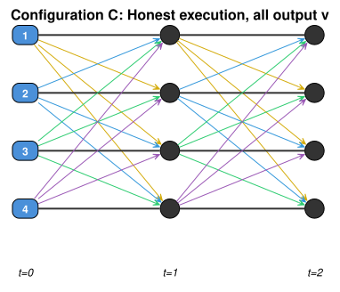
By validity, all nodes output 0.
- Configuration \(C_{1,1}\): remove one message from node 1 in round 2
Node 1 is now faulty (1 fault used). We remove its message to node 2 in round 2. Only node 2 sees a difference; nodes 3 and 4 see the same messages as in \(C\).
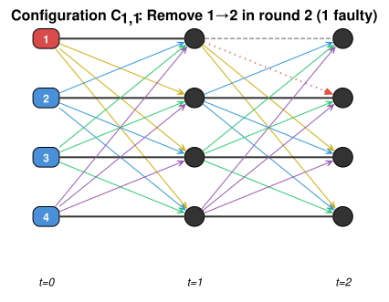
Nodes 3,4 have the same view as \(C\), so they output 0. Node 2 is the only node that sees a difference, but it must agree with 3,4, so it must also output 0.
- Configurations \(C_{1,2}, \ldots, C_{1,n}\): remove all of node 1's round-2 messages
Continue removing node 1's round-2 messages one at a time. At each step, only one new node sees a difference, and all others already must output 0, so that node must also output 0. After all are removed:
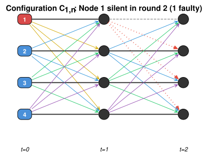
Node 1 is completely silent in round 2. All nodes still must output 0. Faults used: 1 (node 1).
- Configurations \(C_{2,1}, \ldots, C_{2,n}\): remove all of node 1's round-1 messages
Now remove node 1's round-1 messages one at a time using the same argument. After all are removed, node 1 is completely silent in both rounds:
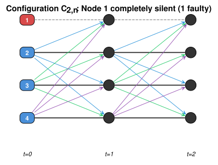
Node 1 sent nothing in any round. It is fully hidden. All nodes still must output 0. Faults used: 1 (node 1).
- Configurations \(C_{3,1}, \ldots, C_{4,n}\): hide node 4 (use second fault)
Repeat the same process for node 4: remove its messages one at a time from round 2, then round 1. Each removal changes only one node's view, forcing the same output. After all are removed:
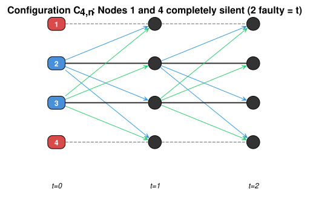
Both nodes 1 and 4 are completely silent. Faults used: 2 (= \(t\)). All nodes must still output 0.
- The contradiction
In \(C_{4,n}\), nodes 2 and 3 only hear from each other. They never received any information about \(v=0\). But the same stripping argument starting from an honest execution with \(v=1\) produces the same configuration, where nodes 2 and 3 must output 1.
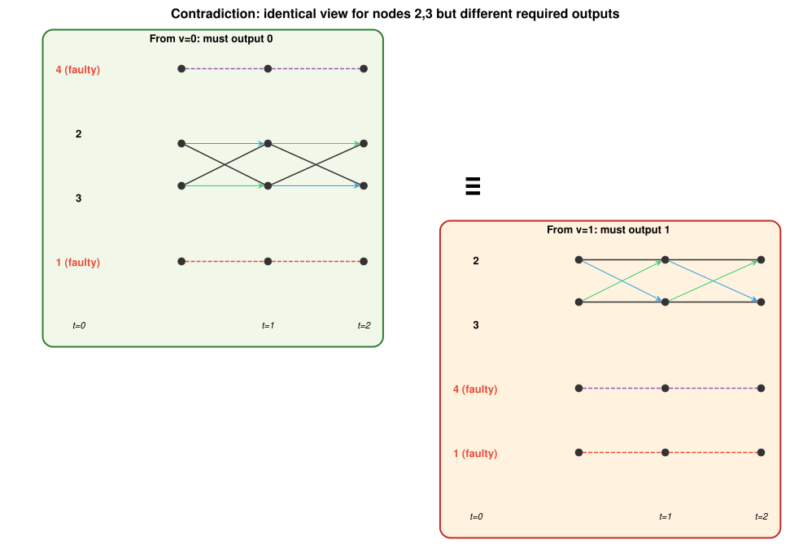
Nodes 2 and 3 cannot distinguish these two configurations, yet they must output 0 in one and 1 in the other. Contradiction. \(\square\)
General argument
This generalizes to any \(n > t+1\) with \(t\) rounds. We start from an honest execution with \(v=0\) and remove messages one at a time, peeling away entire nodes round by round from the last round backward. Each single removal changes only one receiver's view, so agreement forces the same output. After \(t\) nodes are fully hidden (\(t\) faults used), the remaining \(n - t > 1\) nodes hear nothing about \(v\), but the same stripping argument starting from \(v=1\) forces them to output 1. Since the silent configuration is the same in both cases, we have a contradiction.
With \(t+1\) rounds this fails: you can only hide \(t\) nodes, but by round \(t+1\) every surviving value carries \(t+1\) signatures, guaranteeing at least one honest signer.
Upper bound / protocol (Theorem 1 + Theorem 3)
Theorem
Byzantine agreement with authentication can be achieved for \(n\) processors with at most \(t\) faults within \(t+1\) phases, using \(O(n^2)\) messages, assuming \(n > t+1\).
This matches the lower bound, so \(t+1\) rounds are tight.
Protocol (Dolev-Strong)
Each processor maintains a set \(\text{extracted}\) of values it has seen with valid signature chains, initially empty. A message is valid at round \(i\) if it has the form \(\langle v \rangle_{S, p_1, \ldots, p_{i-1}}\) where all signers are distinct and the first is the sender \(S\).
Round 1: The sender \(S\) signs its value \(v\) and sends \(\langle v \rangle_S\) to all processors.
Rounds \(i = 2, \ldots, t+1\): Each processor \(p\):
- Receives all messages from the previous round.
- Discards any message that does not have \(i\) distinct valid signatures (including \(S\)'s).
- For each non-discarded message carrying value \(v\): if \(v \notin \text{extracted}\), add \(v\) to \(\text{extracted}\).
- Sign and relay: for each value just extracted (at most 2 total across all rounds), append \(p\)'s signature and forward to all processors whose signatures do not already appear on the message.
- Once \(p\) has relayed 2 distinct values total, it stops sending.
Decision (after round \(t+1\)):
- If \(|\text{extracted}| = 1\), output the single extracted value.
- Otherwise, output \(\bot\) (including if \(\text{extracted} = \emptyset\), i.e., "sender fault").
Why it works
Validity: If the sender is honest, it sends the same \(v\) to everyone in round 1. Authentication prevents faulty nodes from forging a message \(\langle v' \rangle_S\) for \(v' \neq v\). So every correct processor extracts only \(v\) and outputs \(v\).
Agreement: Suppose some correct processor \(p\) extracts value \(v\) for the first time at round \(i \leq t+1\). The message carrying \(v\) has \(i\) distinct signatures including \(S\)'s. Processor \(p\) signs and relays to all processors not yet on the chain. By round \(i+1 \leq t+2\)… but we only have \(t+1\) rounds. The key insight: if \(p\) extracts \(v\) at round \(t+1\), the message has \(t+1\) signatures. Since at most \(t\) processors are faulty, at least one signer is correct and must have relayed \(v\) earlier, so all correct processors already received \(v\) by round \(t\). In general, any value extracted by any correct processor will reach all correct processors by round \(t+1\).
At the end, every correct processor has the same \(\text{extracted}\) set. If it contains exactly one value, they all output it. If it contains multiple values (equivocation detected), they all output \(\bot\).
Example: honest run (\(n=5, t=3\))
The sender \(S\) has \(v=0\). The protocol runs for \(t+1=4\) rounds.
- Round 1: \(S\) sends \(\langle 0 \rangle_S\) to nodes 2, 3, 4, 5. All extract \(\{0\}\).
- Round 2: Each node signs and relays \(\langle 0 \rangle_{S,i}\) to the other 3 non-sender nodes.
- Rounds 3–4: No new values extracted, relay limit not triggered. No messages.
- Decision: \(|\text{extracted}| = 1\), all output 0.
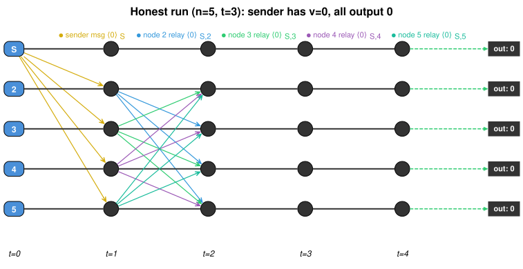
Example: faulty run (\(n=5, t=3\), sender equivocates)
The sender \(S\) is Byzantine. It sends \(\langle 0 \rangle_S\) to node 2, \(\langle 1 \rangle_S\) to node 3, and nothing to nodes 4, 5. Blue arrows carry value 0; orange arrows carry value 1; red dotted arrows are missing messages.
- Round 1: Node 2 extracts \(\{0\}\). Node 3 extracts \(\{1\}\). Nodes 4, 5 receive nothing.
- Round 2: Node 2 relays \(\langle 0 \rangle_{S,2}\) to 3, 4, 5. Node 3 relays \(\langle 1 \rangle_{S,3}\) to 2, 4, 5.
- Now: node 2 has \(\{0, 1\}\), node 3 has \(\{1, 0\}\), nodes 4, 5 have \(\{0, 1\}\).
- Round 3: Nodes relay the second value they extracted. Both values propagate further with additional signatures.
- Round 4: All nodes already have both values. Relay limit reached.
- Decision: \(|\text{extracted}| = 2\) for all correct nodes, all output \(\bot\). Agreement!
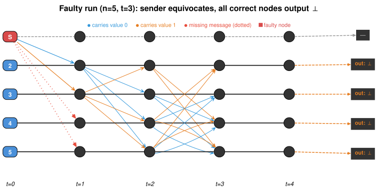
Message complexity results
Theorem 3: \(O(n^2)\) messages in \(t+1\) rounds
Byzantine agreement can be achieved for \(n\) processors with at most \(t\) faults within \(t+1\) phases using at most \(O(e) = O(n^2)\) messages.
This is the protocol described above. The key constraint: each correct processor relays at most 2 distinct values total across all rounds. Since a processor sends at most 2 messages per edge (one per value), and there are \(e = O(n^2)\) directed edges on a complete network, the total message count is \(O(n^2)\).
The honest and faulty run diagrams above illustrate this protocol directly.
Theorem 4: \(O(nt)\) messages in \(t+2\) rounds
Byzantine agreement can be achieved for \(n\) processors with at most \(t\) faults within \(t+2\) phases using at most \(O(nt)\) messages.
Key idea: Designate \(t+1\) nodes as relay processors. Non-relay (passive) processors only send messages to relay processors. This restricts the number of edges used: relay nodes communicate with everyone (\(O(nt)\) edges), passive nodes only reach relay nodes (\(O(nt)\) edges). Passive-to-passive communication is forbidden.
Why \(t+2\) rounds: The extra round (compared to Theorem 3) compensates for the restricted topology. If a correct processor extracts a new value by round \(t+2\), some correct processor extracted it by round \(t\), so some correct relay processor extracted it by round \(t+1\), and all correct processors receive it by round \(t+2\).
Why it works: The \(t+1\) relay processors act as a backbone. Since at most \(t\) are faulty, at least one relay processor is correct and will faithfully forward every value it sees.
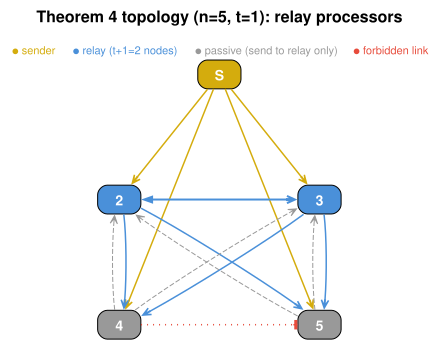
Theorem 5: \(O(e)\) messages on general networks in \(t+d\) rounds
Let \(e\) be the number of directed edges in the communication network (on a complete graph, \(e = n(n-1) = O(n^2)\), but on sparser graphs \(e\) can be much smaller). The following three examples show how \(e\) varies with network density:
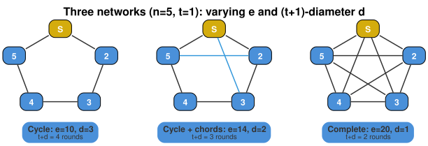
If \(d\) is the $(t+1)$-diameter of a $(t+1)$-connected network of \(n\) processors with at most \(t\) faults, then Byzantine agreement can be achieved within \(t+d\) phases using at most \(O(e)\) messages.
Key idea: Theorems 1–4 assume a complete network. Theorem 5 generalizes to any network with enough connectivity. Run the same protocol as Theorem 3, but processors can only send messages along edges that exist in the graph. Each edge carries at most 2 messages (one per extracted value), so the total is bounded by \(2e = O(e)\). The tradeoff: on a non-complete graph, values need more hops to reach all processors, adding \(d - 1\) extra rounds beyond the \(t+1\) minimum.
$(t+1)$-connectivity means there exist \(t+1\) vertex-disjoint paths between every pair of nodes. This is necessary: if the adversary corrupts \(t\) nodes, it can block at most \(t\) of these paths, but at least one remains honest, ensuring eventual delivery.
$(t+1)$-diameter \(d\) is the maximum, over all node pairs, of the length of the longest among the \(t+1\) shortest vertex-disjoint paths. Intuitively, \(d\) measures the worst-case number of hops a message needs to reach its destination even when \(t\) intermediate nodes are corrupted. This is why the protocol needs \(t + d\) rounds instead of \(t+1\): the extra \(d - 1\) rounds compensate for the longer paths.
Theorem 6 (best algorithm): \(O(nt)\) messages in \(t+1\) rounds
Byzantine agreement can be achieved on a complete network in \(t+1\) phases with \(O(nt)\) messages, assuming \(n > 2t\).
Key idea: Split processors into \(2t+1\) active and \(n - 2t - 1\) passive. Active processors (including the sender) run the Theorem 3 protocol among themselves, ignoring messages signed by passive processors. Passive processors never send; they only observe messages from active processors.
Active processors form a small clique of \(2t+1\) nodes. Running Theorem 3 among themselves costs \(O(t^2)\) messages. They also forward to passive nodes: \((2t+1)(n - 2t - 1) \cdot 2 = O(nt)\) messages. Total: \(O(t^2 + nt) = O(nt)\).
Passive processors decide by counting: if \(\geq t+1\) active processors sent more than one message (equivocation detected), output \(\bot\). Otherwise, extract values from messages that carry \(t+1\) distinct active signatures (guaranteeing at least one honest active signer).
Why \(n > 2t\) is needed: With \(2t+1\) active processors and at most \(t\) faulty, at least \(t+1\) active processors are correct. This majority among actives ensures passive processors can distinguish honest from faulty behavior.
No extra round needed (unlike Theorem 4): active processors reach agreement among themselves in \(t+1\) rounds, and passive processors observe the same messages in real time.
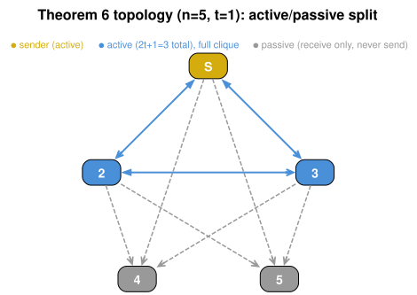
Key observations
- The \(t+1\) round lower bound holds for any message type or protocol (not just authentication-based ones), generalizing the Fischer-Lynch bound.
- Previous authenticated algorithms required \(O(n^{t})\) messages; these are the first polynomial-message algorithms.
- The number of bits exchanged by correct processors is also polynomial in \(n\) and \(t\).